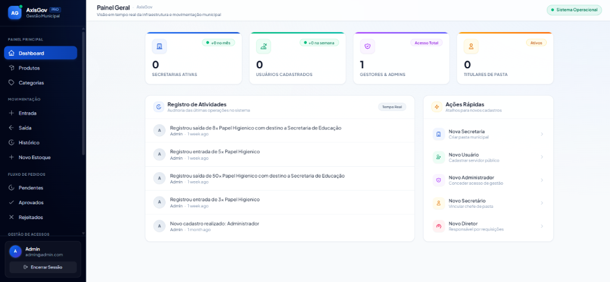
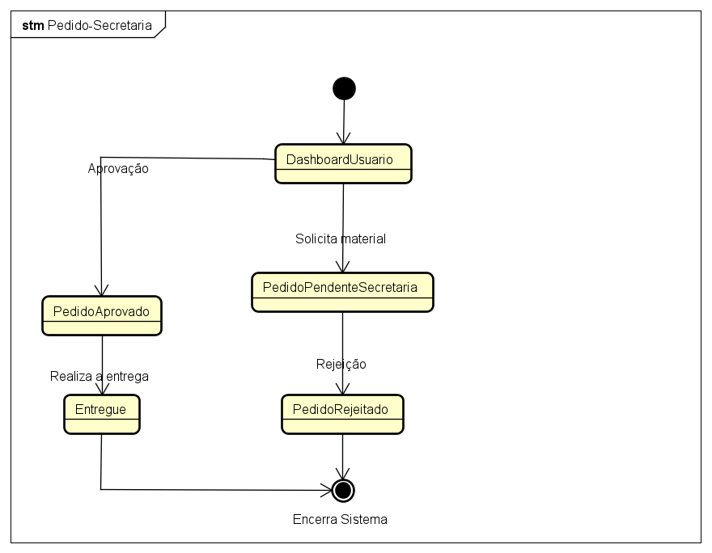
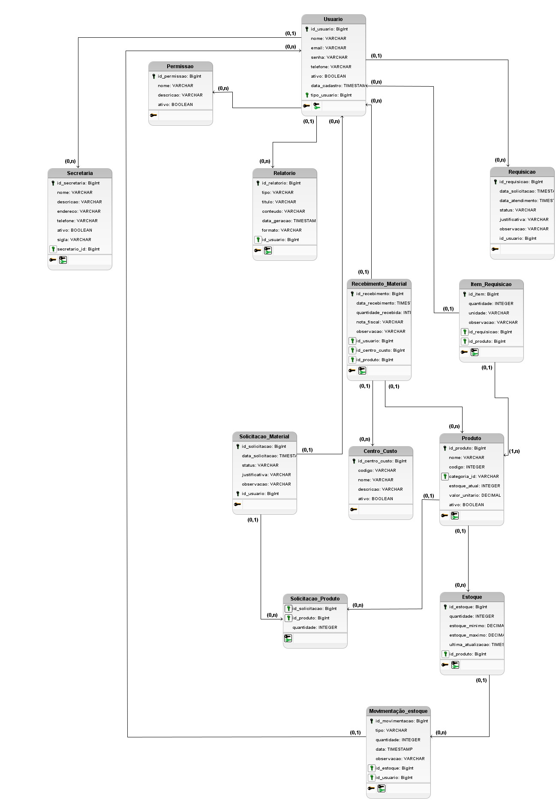

// Domain Layer: Compliance & Audit Trail
final class ProcessoEmpenhoService {
public function liquidar(Processo $p, Servidor $auditor): Hash {
DB::transaction(fn() => {
$p->validarConformidadeLRF();
$hash = AuditoriaLedger::append([
'autor' => $auditor->matricula,
'rubrica' => $p->rubrica_orcamentaria,
'sha256' => hash('sha256', $p->payload())
]);
return $hash;
});
}
}
-- Relational Ledger: Append-Only Trigger
CREATE TRIGGER trg_audit_immutable
BEFORE UPDATE OR DELETE ON auditoria_governamental
FOR EACH ROW EXECUTE FUNCTION fn_raise_security_violation();
-- Indexação Textual Concorrente
CREATE INDEX CONCURRENTLY idx_patrimonio_gin
ON bens_tombados USING gin (to_tsvector('portuguese', descricao));
AxisGov
Centralizar, organizar e auditar os processos administrativos, controle de patrimônio público, gestão de suprimentos em almoxarifados e execução orçamentária fiscal, garantindo conformidade estrita com a Lei de Responsabilidade Fiscal e diretrizes de transparência pública.
Breve descrição do projeto: O AxisGov é uma plataforma corporativa desenvolvida durante o estágio supervisionado, utilizando o ecossistema Laravel e arquitetura limpa para modernizar o controle patrimonial, requisição de materiais e gestão administrativa governamental.

Diagnóstico do Problema, Escolhas Tecnológicas & Arquitetura da Solução.
O AxisGov nasceu da necessidade prática identificada durante as atividades de estágio, onde processos públicos sofrem com perda de dados, lentidão na tramitação e risco fiscal.
2.1 O Problema que o Sistema Busca Resolver
Fragmentação & Descontrole
Órgãos públicos operavam com controles em planilhas dispersas e arquivos físicos, resultando em extravio de tombos patrimoniais, divergências no inventário de suprimentos e falhas na prestação de contas.
Morosidade e Falta de Trilha
Ausência de uma trilha confiável de auditoria, impossibilitando apurar a autoria e data exata de alterações em empenhos ou baixas de bens, gerando inconformidades frequentes junto ao Tribunal de Contas.
Sistemas Legados com Recarregamento Lento
Sistemas antigos baseados em formulários com recarregamento total de página causavam perda de digitação, quedas constantes de sessão e baixa produtividade dos servidores públicos em expediente contínuo.
2.2 Tecnologias Utilizadas na Construção do Sistema
LARAVEL 11
Framework PHP 8.4 orientado a Clean Architecture, injeção de dependência e Eloquent ORM com queries otimizadas.
REACT 19 + TS
Interface componentizada com TypeScript estrito, garantindo zero erros de tipo e rendering atômico.
POSTGRESQL 16
Persistência relacional com integridade referencial, particionamento e triggers para trilha de auditoria Write-Once.
INERTIA.JS V2
Elimina endpoints REST redundantes; une a segurança de roteamento no servidor à agilidade de um SPA sem reload.
2.3 Arquitetura e Descrição Resumida da Solução
A solução adota o padrão Clean Architecture (Arquitetura Limpa) estruturada em três camadas fundamentais:
Componentes React 19 desacoplados e tipados, consumindo dados do Laravel sem APIs REST intermediárias via Inertia.js.
Controllers magros que delegam a execução a Services dedicados, validando conformidade fiscal e segregação de funções.
Repositórios que persistem dados em transações atômicas (ACID) e gravam hashes imutáveis em log append-only.
Casos de Uso Previstos & Cronograma de Desenvolvimento.
Abaixo estão detalhados os casos de uso previstos para a plataforma, acompanhados da respectiva tabela de cronograma de desenvolvimento que reflete a evolução real durante o bimestre de estágio.
3.1 NAVEGAR PELOS CASOS DE USO:
UC01 — Efetuar Login / Logout & Gerenciar Perfil
Ator: Usuário (todos os perfis do sistema)
Autenticação segura no portal AxisGov via e-mail e senha, com redirecionamento automático conforme perfil RBAC cadastrado (Administrador, Secretário, Diretor, Responsável pelo Estoque). Suporte a edição de nome, telefone e redefinição de senha com confirmação obrigatória.
AxisGov • Acesso Seguro
Plataforma Integrada de Gestão Pública Municipal. Controle de acesso por perfil (RBAC).
Identificação do Usuário
UC02 — Gerenciar Produtos & Registrar Movimentações
Ator: Administrador / Responsável pelo Estoque
Cadastro e manutenção do catálogo de insumos públicos (código único, nome, categoria, valor unitário). Registro transacional de entradas e saídas de estoque com validação de saldo, lock pessimista no banco de dados e geração automática de histórico de movimentações rastreável.
Papel Sulfite A4 75g (Caixa c/ 10 resmas)
Álcool em Gel 70% Hospitalar 5 Litros
Cartucho de Toner HP Laser Jet 85A
UC03 — Aprovar / Rejeitar Pedidos de Material
Ator: Administrador (aprovação) • Diretor (criação e acompanhamento)
Fluxo completo de requisição de materiais entre unidades descentralizadas (escolas, setores) e o almoxarifado central. O Diretor cria e acompanha pedidos com status em tempo real; o Administrador analisa e transita o status entre Pendente → Aprovado ou Rejeitado com justificativa formal.
UC04 — Gerenciar Usuários, Secretarias & Categorias
Ator: Administrador do Sistema
Gestão completa dos cadastros mestres do AxisGov: criação, edição, inativação e exclusão de usuários com atribuição de perfil RBAC; parametrização de Secretarias Municipais (nome, sigla, endereço, vinculação de diretores); e manutenção da taxonomia de categorias de materiais para o catálogo de produtos.
3.2 Cronograma de Desenvolvimento do Estágio (Formato Tabela)
Evolução cronológica alinhada ao planejamento bimestral de estágio e status real de implementação de cada caso de uso.
| CÓDIGO | CASO DE USO / ATIVIDADE | MÓDULO DO SISTEMA | DATA DE INÍCIO | TÉRMINO / PREVISÃO | RESPONSÁVEL | STATUS DE EXECUÇÃO |
|---|---|---|---|---|---|---|
| UC01 | Efetuar Login / Logout & Gerenciar Perfil e Senha | Módulo 01: Autenticação & Segurança (RBAC) | 18/04/2026 | 25/04/2026 | Samir Chehade | Concluído |
| UC02 | Gerenciar Categorias de Materiais | Módulo 02: Catálogo de Produtos | 24/04/2026 | 30/04/2026 | Samir Chehade | Concluído |
| UC03 | Gerenciar Produtos (Cadastro, Edição, Inativação) | Módulo 02: Catálogo de Produtos | 24/04/2026 | 08/05/2026 | Samir Chehade | Concluído |
| UC04 | Registrar Entrada de Estoque (DB Transaction) | Módulo 03: Almoxarifado & Estoque | 24/04/2026 | 15/05/2026 | Samir Chehade | Concluído |
| UC05 | Registrar Saída de Estoque (Lock Pessimista) | Módulo 03: Almoxarifado & Estoque | 15/05/2026 | 30/05/2026 | Samir Chehade | Concluído |
| UC06 | Consultar Histórico de Movimentações | Módulo 03: Almoxarifado & Estoque | 30/05/2026 | 10/06/2026 | Samir Chehade | Concluído |
| UC07 | Gerenciar Secretarias Municipais | Módulo 04: Administração do Sistema | 18/04/2026 | 28/04/2026 | Samir Chehade | Concluído |
| UC08 | Gerenciar Usuários & Atribuição de Perfis RBAC | Módulo 04: Administração do Sistema | 18/04/2026 | 10/05/2026 | Samir Chehade | Concluído |
| UC09 | Criar Pedido de Material (Diretor → Almoxarifado) | Módulo 05: Fluxo de Requisições | 05/10/2026 | 16/10/2026 | Samir Chehade | Planejado |
| UC10 | Acompanhar / Editar Pedidos Próprios | Módulo 05: Fluxo de Requisições | 19/10/2026 | 30/10/2026 | Samir Chehade | Planejado |
| UC11 | Aprovar / Rejeitar Pedidos de Material | Módulo 05: Fluxo de Requisições | 03/11/2026 | 13/11/2026 | Samir Chehade | Planejado |
| UC12 | Soft Deletes em Todas as Entidades | Módulo 06: Integridade de Dados | 16/11/2026 | 24/11/2026 | Samir Chehade | Planejado |
| UC13 | Visualizar Painel da Secretaria (Dashboard) | Módulo 04: Administração do Sistema | 25/11/2026 | 30/11/2026 | Samir Chehade | Planejado |
Diagramas de Engenharia de Software Desenvolvidos no Estágio.
Todos os diagramas elaborados durante o projeto encontram-se disponíveis abaixo com acesso livre e sem necessidade de solicitação de permissão, em conformidade com as regras da UniFil.
Diagrama de Casos de Uso
Diagrama UML completo com os 4 atores do AxisGov: Usuário (Login/Logout, Gerenciar Perfil), Administrador (8 casos de uso: Produtos, Estoque, Secretarias, Usuários, Pedidos), Diretor (Criar e Acompanhar Pedidos) e Secretário (Painel da Secretaria).

Diagrama de Classes (Domínio de Negócio)
Estrutura OO completa: entidades User (com RoleEnum: ADMIN=1, SECRETARIO=2, DIRETOR=3, USER=4, RESPONSAVEL_ESTOQUE=5), Secretaria, Categoria, Produto, Movimentacao (com TipoMovimentacao: entrada/saida), Pedido (com StatusPedido: pendente/aprovado/rejeitado).

Diagrama de Sequência: Gerenciar Produto
Fluxo completo de Cadastrar e Deletar Produto: Responsável Estoque → Interface AxisGov → ProdutoController → Banco de Dados. Cobre cenários de dados válidos (HTTP 200 Sucesso), dados inválidos (HTTP 400 Erro) e exclusão com confirmação de status.

Diagrama de Sequência: Gerenciar Usuário
Fluxo CRUD completo de Usuário realizado pelo Secretário: Adicionar (com verificação de duplicidade), Deletar (com consulta de existência) e Atualizar (com formulário de visualização e persistência). Cobre todos os cenários de erro 409, 400 e sucesso 200.

Diagrama de Sequência: Registrar Entrada de Estoque
Fluxo de registro de nova entrada de material no almoxarifado: Responsável Estoque → Interface AxisGov → EntradaController → Banco de Dados. Validação de dados com retorno HTTP 201 (sucesso) ou HTTP 400 (dados inválidos).

Diagrama de Estados: Ciclo de Vida do Pedido
Máquina de estados formal do Pedido de Material no AxisGov: DashboardUsuario → [Solicita material] → PedidoPendenteSecretaria → [Aprovação] → PedidoAprovado → [Realiza a entrega] → Entregue / [Rejeição] → PedidoRejeitado → Encerra Sistema.

Diagrama de Entidade-Relacionamento (DER)
Modelagem completa do banco de dados do AxisGov: entidades Usuário, Secretaria, Permissao, Produto, Estoque, Movimentacao_estoque, Pedido (Solicitacao_Material e Solicitacao_Produto), Centro_Custo, Recebimento_Material, Relatorio, Requisicao e Item_Requisicao. Normalizado em 3FN.

Diagrama de Implantação (Deployment)
Arquitetura de implantação do AxisGov: Dispositivo Cliente (Web Browser) → HTTP → Servidor (Laravel/PHP com Blade) → TCP/IP PostgreSQL → Banco de Dados PostgreSQL. Ambiente monolítico com server-side rendering via Blade e persistência relacional.

Evidências de Funcionamento do Sistema em Produção.
Abaixo são apresentadas as capturas reais de telas dentro de molduras de navegadores com profundidade agressiva e a área reservada para os vídeos de até 5 minutos demonstrando a operação prática do AxisGov.
Demonstração Prática do AxisGov em Operação (Vídeo 1)
Gravação detalhada demonstrando a arquitetura em produção do AxisGov: autenticação segura com controle de acesso por perfil (RBAC), navegação pelo catálogo de materiais, parametrização de secretarias e validação dos formulários transacionais.
Fluxo de Requisições & Movimentações de Estoque (Vídeo 2)
Demonstração complementar focada no ciclo de requisição de materiais: solicitação emitida pela Diretoria setorial, fila de homologação e aprovação pelo Administrador, e registro atômico com lock pessimista de saídas e entradas no almoxarifado.
Captura de Tela: Painel Geral de Gestão Municipal & Registro de Atividades
Visão em tempo real da infraestrutura municipal, secretarias ativas, gestores/admins e log de auditoria de operações em tempo real.
Arquivo PDF do Relatório de Estágio Atualizado.
Em conformidade com a avaliação bimestral da UniFil, disponibiliza-se abaixo o documento formal contendo a descrição de todas as atividades desenvolvidas ao longo do bimestre, evidências técnicas e validação das horas de estágio.
Identificação Acadêmica do Discente & Orientador.
Dados obrigatórios para homologação da nota bimestral no Centro Universitário Filadélfia (UniFil).